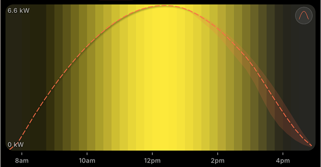

If you are weighing solar feed-in tariff vs self-consumption, here is the short answer: using your own solar is worth far more than selling it. A feed-in tariff pays roughly 4 to 8 cents for every kilowatt-hour you export, but you pay 25 to 40 cents to buy electricity back from the grid. So every unit of solar you use in your home instead of exporting is worth four to eight times as much. The export credit on your bill is the consolation prize; self-consumption is the main game.
Key takeaways
- Exporting solar earns a feed-in tariff of about 4-8c/kWh; buying it back costs 25-40c/kWh, a four-to-eightfold gap.
- Self-consumption (using your own solar) avoids the full retail price, so it is the highest-value use of every kilowatt-hour you generate.
- Feed-in tariffs keep falling as more rooftop solar floods the grid at midday, which makes self-consumption more valuable every year.
- You can lift self-consumption from ~30% to 60-80% just by shifting flexible loads into the 9am-3pm solar window, no battery required.
The two ways solar actually saves you money
A grid-connected solar system saves money through two separate channels, and they are worth wildly different amounts. The first is the feed-in tariff: when your panels produce more than your home is using, the surplus flows out to the grid and your retailer credits you a small amount per kilowatt-hour. The second is self-consumption: when your home draws power directly from the panels, you simply do not buy that energy from the grid, so you avoid the full retail price you would otherwise have paid.
Most people assume both channels are roughly equal, because both appear as line items on the bill. They are not. The export credit is small and shrinking; the avoided retail cost is large and stable. Understanding that difference is the single most useful thing a solar household can learn, because it changes how you use energy day to day.
What a feed-in tariff actually pays (and why it keeps falling)
A feed-in tariff is the rate your electricity retailer pays for solar you send back to the grid. In most of Australia that sits somewhere around 4 to 8 cents per kilowatt-hour today, and comparable schemes in the UK and parts of Europe pay similarly modest export rates. A decade ago, early adopters were offered premium tariffs of 40 to 60 cents to kick-start rooftop solar, but those legacy deals are closing, and new connections get the lower market rate.
The reason is simple supply and demand. Rooftop solar all produces at the same time: a huge wave of cheap energy hits the grid in the middle of every sunny day. When millions of homes export at once, the wholesale value of midday power collapses, at times to zero, and occasionally below it. Retailers can only pay you close to what that exported energy is worth to them, so feed-in rates have drifted down toward the floor and will likely keep doing so as more systems connect. That is exactly why forecasting your production and using it yourself matters more each year.
The hidden cost of exporting: the buy-back gap
Here is the part that quietly costs solar households the most. Your panels peak at midday, but a typical home uses the bulk of its energy in the morning before everyone leaves and in the evening after they get home. That timing mismatch means a large share of your generation is exported when nobody is using it; then, a few hours later, you buy electricity back from the grid at the full retail rate to run the oven, the heating, the TV and the lights.
So a single kilowatt-hour can take a remarkably bad round trip: it leaves your roof and earns you, say, 6 cents, then comes back that evening and costs you 35 cents. You are down 29 cents on energy you generated yourself. Multiply that across the 50 to 70 percent of generation a typical home exports, and the lost value adds up to hundreds of dollars a year. This buy-back gap is invisible on the bill: it does not show up as a charge, it shows up as savings that never materialise.
Self-consumption: the higher-value option
Self-consumption flips the maths. When your home uses solar the instant it is produced, that kilowatt-hour is worth the full retail price you avoided, 25 to 40 cents, rather than the few cents you would have earned exporting it. Nothing leaves your roof, nothing comes back at a markup, and the value stays with you.
We measure this as your self-consumption rate: the share of total generation you use directly. A home that produces 30 kWh on a sunny day and uses 12 kWh of it sits at 40 percent. Without any deliberate effort, most households land around 25 to 35 percent, simply because daily routines do not line up with the solar curve. The good news is that this number is highly movable. By shifting flexible loads into the daylight hours, plenty of homes reach 60 to 80 percent, and every percentage point you gain is energy bought at retail price that you no longer have to pay for.
The cheapest battery you will ever own is the appliance you choose to run while the sun is shining. It stores nothing, costs nothing, and captures full retail value the moment you press start.
A useful rule of thumb: a battery makes economic sense mainly once your daytime self-consumption is already high and you still have meaningful surplus to store for the evening. Before you spend thousands on storage, it is worth exhausting the free option first: moving flexible loads into the solar window. For many households that single behaviour change captures most of the available savings at zero hardware cost.
A worked example: the same kWh, two very different values
Picture a load that uses about 2 kWh: a warm wash cycle, a dishwasher run, or a couple of hours of pool-pump time. Run it at 9pm and you import all 2 kWh from the grid at, say, 35 cents: that is 70 cents off your wallet, while the 2 kWh your panels made earlier that day were exported for around 6 cents each (12 cents total). Net position for that energy: you spent 70 cents and earned 12 cents.
Now run the exact same load at 12pm, straight off the panels. You import nothing, so you avoid the full 70 cents, and there is no exported energy to under-sell. The appliance did identical work; the only thing that changed was the hour you started it. Repeat that pattern across the washing, the dishwasher, hot water and an EV charge most days, and the difference compounds into a few hundred dollars over a year. Our guide to the best time to run appliances goes through each load in detail.
How to shift from exporting to self-consuming
Raising your self-consumption is mostly about timing flexible loads, the ones that do not care what hour they run, as long as the job gets done. The practical moves:
- Use delay-start timers. Most modern dishwashers and washing machines let you set a start time. Load them in the morning and have them fire at midday when production is strongest.
- Move hot water and pool pumps to the middle of the day. Heating water and circulating a pool are large, flexible loads that are easy to schedule into the 9am-3pm window with a simple timer.
- Charge EVs and e-bikes on sun, not at night. Daytime charging is one of the biggest self-consumption wins available, since an EV can soak up several kilowatt-hours of solar that would otherwise be exported for cents.
- Cluster discretionary loads on the sunniest days. If you know Thursday will be clear and Friday cloudy, do the big washing on Thursday. Knowing this in advance is exactly what a forecast is for.
The catch is that the solar window is not fixed. Cloud cover, season and your roof's orientation all change when, and how strongly, your panels produce on any given day. Guessing "around noon" works on a clear summer day and falls apart under broken cloud or in winter. This is where a forecast earns its keep: instead of assuming, you can see the expected production curve for the week and line up your flexible loads with the hours that will actually deliver.

That is the job OnSun is built for. It forecasts your specific system's output up to 7 days ahead and recommends the best times to run each appliance, so more of your generation is used at home rather than exported. To be clear about what it does and does not do: OnSun does not switch appliances on or off for you, and the savings it shows are estimates based on your inputs and weather data, not a guarantee, but it removes the guesswork from when to press start. For a deeper walkthrough of the savings logic, the free Solar Savings Guide is a good next read, and our support page covers setting up your system details.